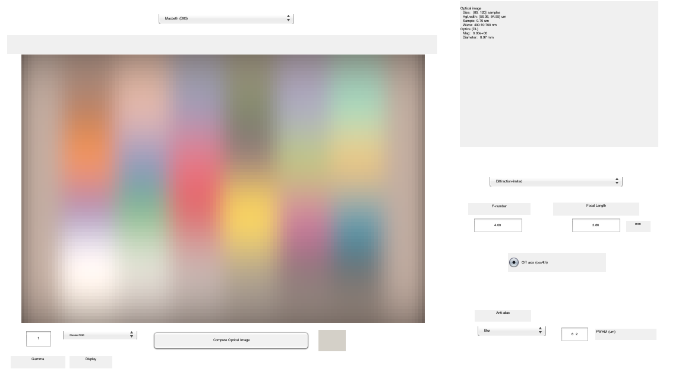
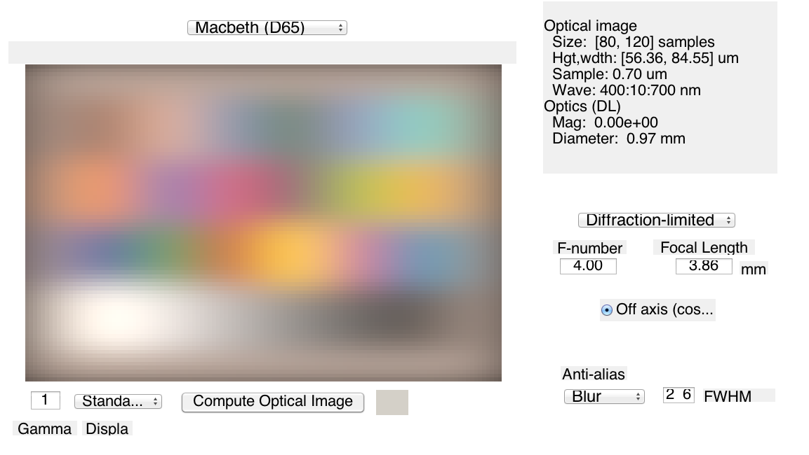

Contents
function varargout = v_diffuser(varargin) % % Validate diffuser function of optical image calculations. % varargout = UnitTest.runValidationRun(@ValidationFunction, nargout, varargin); end function ValidationFunction(runTimeParams)
v_Diffuser function itself
See oiDiffuser for how to set up the 2D diffusing An example from the header to that file is here:
oi = oiCreate; scene = sceneCreate; scene = sceneSet(scene,'fov',1); oi = oiCompute(scene,oi); % SD units are FWHM microns, [oi,sd,blurFilter] = oiDiffuser(oi,[10,2]); [X,Y] = meshgrid(1:size(blurFilter,2),1:size(blurFilter,1)); wSpatialRes = oiGet(oi,'widthSpatialResolution','microns'); X = X*wSpatialRes; Y = Y*wSpatialRes; X = X - mean(X(:)); Y = Y - mean(Y(:)); figure(1); mesh(X,Y,blurFilter);
Copyright ImagEval Consultants, LLC, 2009function ValidationFunction(runTimeParams)
Initialize ISETBIO
s_initISET;
Build a Macbeth color checker.
scene = sceneCreate; scene = sceneSet(scene,'fov',1);
oi = oiCreate;
Example of setting up the multi-dimensional diffusion calculation.
Note that diffuser is anisotropic. Units are in meters, hence the 10^-6 to convert to microns.
oi = oiSet(oi,'diffuserMethod','blur'); oi = oiSet(oi,'diffuserBlur',[6,2]*10^-6); oi = oiCompute(scene,oi); if (runTimeParams.generatePlots) vcReplaceAndSelectObject(oi); oiWindow; end UnitTest.validationData('oi1',oi);
Rotate the diffusing blur direction 90 degrees.
oi = oiSet(oi,'diffuserBlur',[2,6]*10^-6); oi = oiCompute(scene,oi); if (runTimeParams.generatePlots) vcReplaceAndSelectObject(oi); oiWindow; end UnitTest.validationData('oi2',oi);
END
end